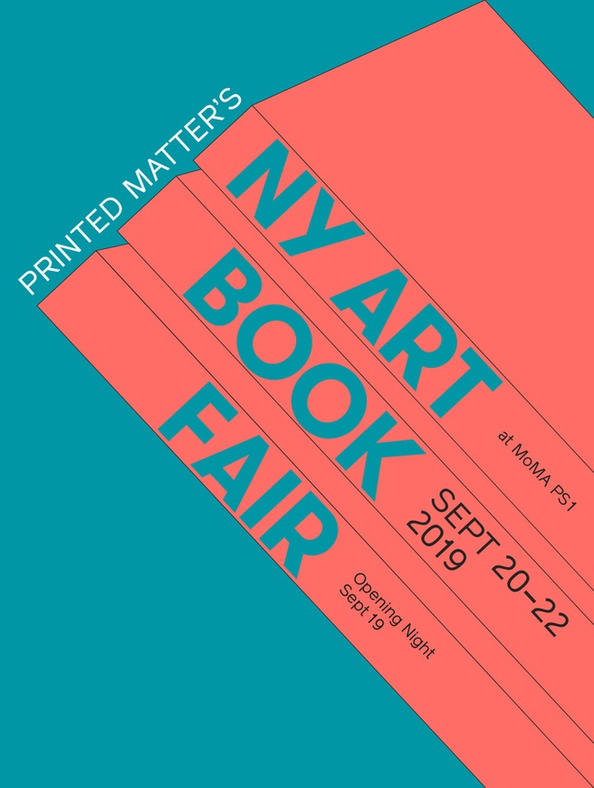
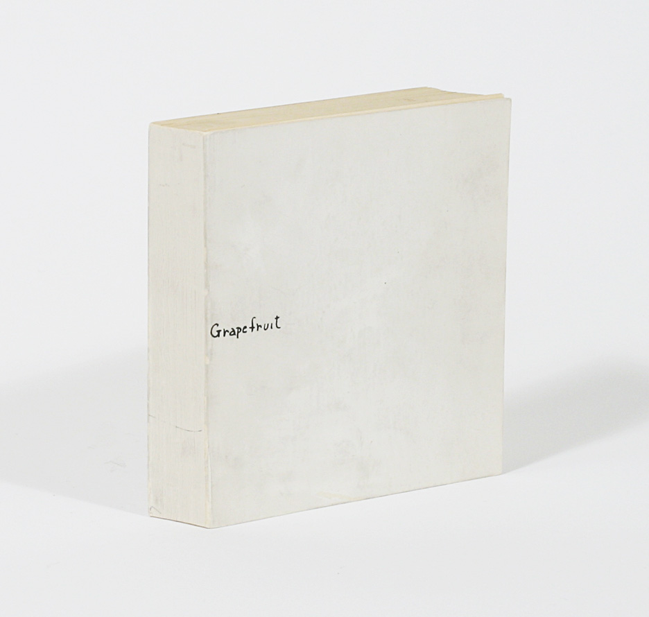
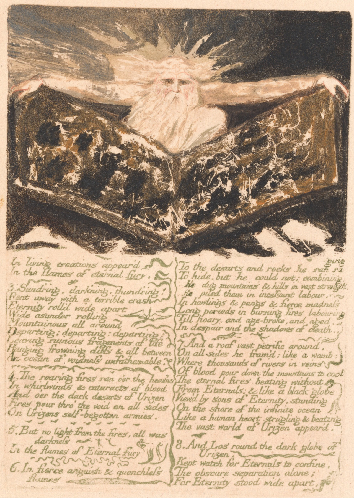

THIS WEBSITE DEALS WITH ART PUBLISHING AS POLITICAL PLATFORM
A BRIEF HISTORY OF ART PUBLISHING
Bookmaking
as a form of artistic activity has a rich heritage and has played a significant if peripheral role
within creative production. In recent years
Artists’ books
and
printed matter
have gained a greater prominence,
most noticeably through the sharp increase in
artists’ book fairs.

Yet with rapidly developing
digital and online technologies,
the demise of the
book,

and
publishing,
has been heralded.
At the core of artists’
self-publishing,
is its relationship with control,
dissemination and
distribution
of ideas.
Following a clear historical precedent,
self-publishing
culture offers freedom from the editorial restrictions exerted
by
mainstream publishing
and print distribution processes, whilst also circumventing gallery systems to reach new audiences.
Publication is to make public. Authorship is entirely attributed to the artist, with ideas freely or affordably exchanged.
Digital technologies have also increased interest in the material values of publishing.
With the concept of artists’ books having been defined in 1973, many artists began to make and produce books as works of art.
The shift from printing technologies to desktop publishing in the 1980s and 1990s resulted in a change in the types and numbers
of books produced by artists, shifting from artists’ books to artists’ publishing. With the advent of the Internet, digital printing,
and print-on-demand technologies, self-publishing became widely available. In the last fifteen years artists, designers, architects,
and photographers have produced new books in the style of twentieth-century artists’ books and zines.
The first forerunner to contemporary artists' books is probably the British artist William Blake, who worked in the late 1700's and early 1800's.
Blake was a poet, painter and printmaker. He wanted to integrate his visual and written work. While Blake produced traditional format books,
he was radical in his desire to integrate the text and visuals on each page. He developed a new printing method that allowed for this integration.
What is especially notable about Blake is his role as a predecessor of the sentiments expressed by book artists of the 1960's. Blake was "seeking a
means of bringing the production of illustrated texts under his own control so that he could become his own publisher, independent of commercial
publishers and letterpress printers." This independence is key to the creation of an artist's book.
While Blake seems a key figure in the history of contemporary artists' books, he is sometimes overlooked in critical or historical commentary on the
book arts. Often, the first suggestion of the book format combined with the work of a visual artist is credited to France in the 1890's. The Parisian
art dealer Ambroise Vollard was paramount in the use of the book format to showcase the work of an artist, the livre d'artiste. (Literally artist's
book, but now the French term is employed to describe this format if created currently.) The livre d'artiste took advantage of the art market created
by the newly rich middle class (bourgeoisie). These books often contained original prints by a well-known artist, illustrating a classic text, in a fine
binding. These books maintained the "standard distinction of image and text" and thus were not true artists' books by today's concept of the term.
But these books were radical at the time in their attempts to unify text and image, and to give the images as much prominence as the text. A book of this
nature made today is following a codified model -- an expected presentation and format. As these livres were market driven, they were not a means to promote
a voice or opinion, nor were they accessible to a wide market because of their cost.
Around the same time period, artists, writers, and political thinkers were publishing pamphlets, posters, and magazines expressing their avant-garde ideas.
The roles often overlapped or worked in conjunction: the artist/writer/activist used one set of skills to further the ambitions of a collaborator with another
set of skills. While these items were not books, per se, they set the stage for a new way of thinking about and using a craft that had existed for centuries.
The Russian avant-garde was an early hotbed of activity for radical new uses of the book format. Beginning in the early 1910's the Russian Futurists
began making books as art, in much the same spirit of the 1960's in America: using readily available (and cheap) materials and methods of creation,
new approaches to the combination of text and images, a somewhat irreverent attitude towards the establishment, and confirmation of the validity
of experimentation and innovation without boundaries or definitions.
Typography became the next arena of innovation. The merging of text and image was radical. Now the text itself was manipulated to express ideas visually
as well as literally spelling out the message. The Italian Futurist (1910's) and German Bauhaus (1920's and 30's) movements were both instrumental in this aspect.
The photograph also contributed to contemporary artists' books. Nineteenth century travel albums had an "implied narrative" that influenced twentieth century
photographers and book artists. The New Realism movement in Germany (1920's) produced many photographic books. While these works were commercially
printed, they were based on the purposeful use of sequence with which to create meaning within the book format.
The Dada movement (late 1910's, early 1920's) in Europe used books as a means of expression, and their "ethical and political concern for the function
of art in society" is a precursor to the American idea behind using books as art during the 1960's.
In Europe Post-WWII and in the early 1960's here in America, a surge of artists' books in the contemporary notion began to emerge. (What is ironic is
that the previously discussed movements were not totally in vogue at this time, and the new makers of books may not have known of their predecessors.)
The improvements in technology (photocopy and offset printing vs. hand set type and lithography) not only allowed economic ease of access to a means
to produce books, but played right into the ideas of a "democratic" form of art, with complete control over production and distribution.
In the next two decades, artists' books were influenced by trends in the art world: the prominence of sculpture in the 1970's and installation art in
the 1980's. Performance and conceptual art were also intertwined with the artists' books movement. From here to the present, artists' books have
continued to be made and continued to be misunderstood because of their undefinable nature. As we think back to William Blake and the livre d'artiste,
we can see how a radical new form became codified over time. The shifting nature of contemporary artists' books has allowed them to participate in each
new wave of ideas. A definition would thwart the one unifying factor through this century: the malleability of the form that makes it applicable in each
time period. Let's keep the definition of artists' books open, and let the exploration continue.
brief history of art publishing.
